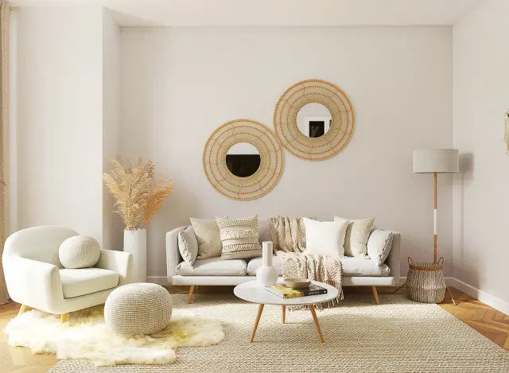
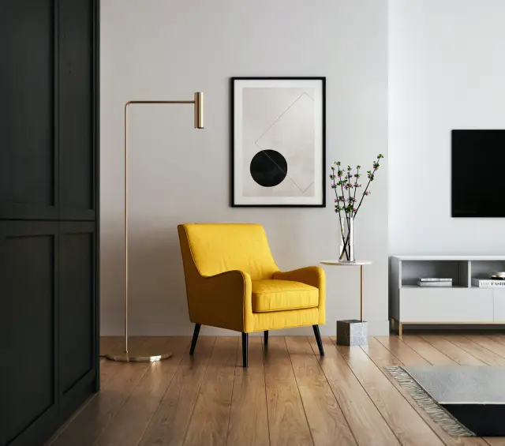

Debut EP: Ember
Five original songs, recorded live to tape.
Singer · Portfolio
Warm lows, honest middles — and breath control that survives the second verse.
Selected work
Five original songs, recorded live to tape.

Forty ceremonies, one setlist philosophy.

Every Thursday at the same little bar.
A guest spot with a 40-voice ensemble.
Studio sessions for three album releases.
A technique course with 200 students.
About
Warm lows, honest middles — and breath control that survives the second verse.
Everything on this page is made to be scrolled slowly. The work below is the honest list — outcomes attached, fluff removed.
Currently
Focus — Vocal technique
Also — Live performance
Based — Seoul
Services
Warm lows, honest middles — and breath control that survives the second verse. Vocal technique is where this shows up most — ask for examples on a call.
Warm lows, honest middles — and breath control that survives the second verse. Live performance is where this shows up most — ask for examples on a call.
Warm lows, honest middles — and breath control that survives the second verse. Harmony arranging is where this shows up most — ask for examples on a call.
Warm lows, honest middles — and breath control that survives the second verse. Studio recording is where this shows up most — ask for examples on a call.
Warm lows, honest middles — and breath control that survives the second verse. Stage presence is where this shows up most — ask for examples on a call.
Warm lows, honest middles — and breath control that survives the second verse. Repertoire is where this shows up most — ask for examples on a call.
Contact